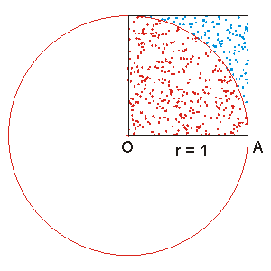
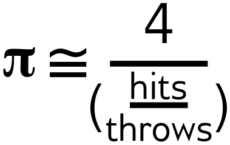

class: center, middle # AWS Batch First Look --- ## What is it - Extends and automates ECS (**E**C2 **C**ontainer **S**ervice) - Adds the concept of a "job" - Adds queuing and basic scheduling for jobs - Manages execution of jobs --- ## Core AWS Technologies - Batch: define, queue, and schedule jobs - ECS: container management - EC2: hosts the ECS cluster --- # Simple Simulation of PI ## The Method Estimating PI with the Monte Carlo algorithm <table> <tr> <td>  </td> <td>  </td> </tr> </table> --- ## The Scripts ### The Core Calculation - basic R script - two arguments: - a starting condition - number of iterations (throws) - counts number of throws inside circle - uploads result into S3 --- ## The Scripts ### The Executor - Python script (boto library is gold standard) - Submits a set of jobs - Monitors output bucket - periodically updates estimate of π - Exits when there are no more running jobs - Prints final result --- ## Execution ??? On-screen demo --- # Conclusions --- ## Options > this was a simple demo, more advanced ways of working - upload of data triggers script - download script at run time - use AWS database services for data storage/retrieval - Batch does have dependencies- chain steps together --- ## Strengths of Batch - Simplifies scaling up analyses - Great for bulk computation (when *quantity* matters) --- ## Limitations of Batch - Not ideal for rapidly iterating workflow - Many changes can require rebuilding the container image - Data access can be a challenge --- ## Next Steps - We can work with you to develop a pipeline using Batch - Our goal is to move load off of gizmo- current and future ---